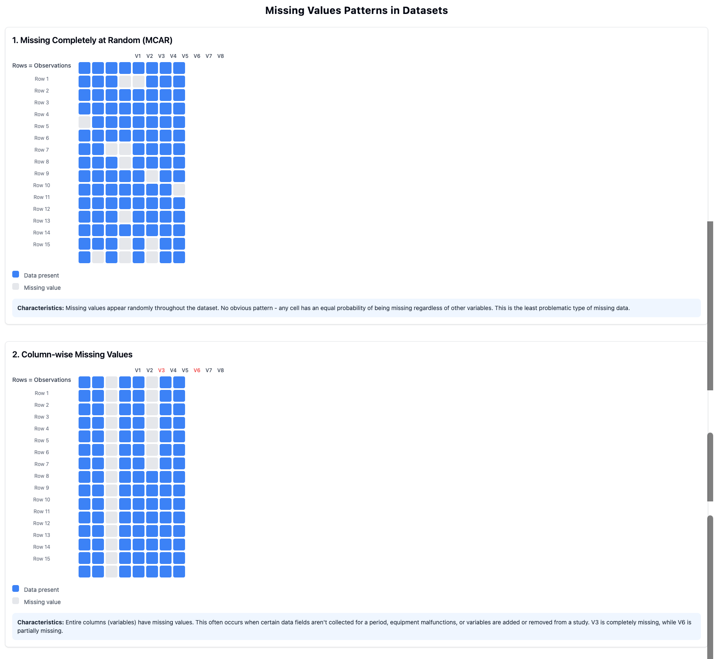
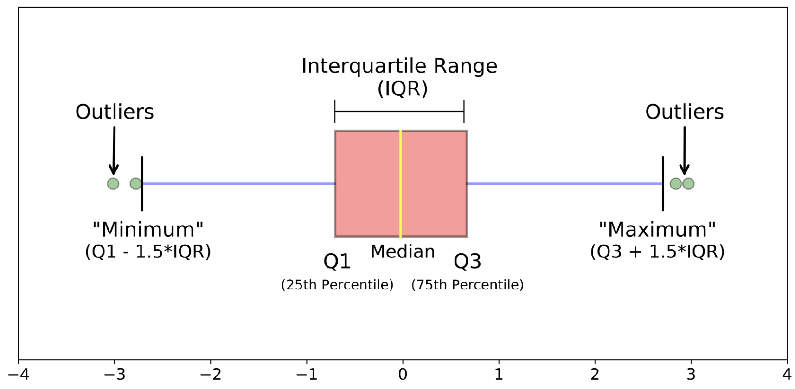

Data cleaning is often the most time-consuming part of data science work—and for good reason. The quality of your cleaning directly affects the validity of your results.
"Garbage in, garbage out" is a fundamental principle in data science. No amount of sophisticated analysis can compensate for poor-quality data.
Common data quality issues include:
Missing values: Data points that weren’t recorded or were lost
Inconsistent formats: The same information recorded in different ways (e.g., "NY" vs. "New York")
Duplicate records: The same observation recorded multiple times
Outliers: Extreme values that may represent errors or unusual cases
Structural issues: Data not organized according to tidy data principles
Coding errors: Incorrect values due to human or system errors
Checkpoint52.Identifying Data Quality Issues.
Which of the following would NOT typically be considered a data quality issue requiring cleaning?
A temperature column contains some values recorded in Celsius and others in Fahrenheit.
This is a data quality issue. Inconsistent units need to be standardized before analysis.
Several cells in a spreadsheet contain "#N/A" or "NULL" values.
Missing values represented as "#N/A" or "NULL" are data quality issues that need to be addressed.
A dataset shows that air pollution levels are higher in urban areas compared to rural areas.
Correct! This is an actual finding from the data rather than a quality issue. It represents a pattern or relationship that might emerge after proper cleaning and analysis.
Dates are stored in different formats such as "01/05/2023", "Jan 5, 2023", and "2023-01-05".
Inconsistent date formats are a data quality issue that needs to be standardized.
Data cleaning is both a science and an art. While there are standard approaches for handling common issues, every dataset presents unique challenges that require careful judgment.
SubsectionHandling Missing Values
Missing values are perhaps the most common data quality issue. Before deciding how to handle them, it’s important to understand why the data might be missing:
Missing Completely at Random (MCAR)
The missing values occur purely by chance, with no relationship to any variables in the dataset.
Missing at Random (MAR)
The probability of missing values depends on observed data but not on the missing values themselves.
Missing Not at Random (MNAR)
The missing values are related to the values themselves (e.g., people with high incomes might be less likely to report their income).
There are several common approaches to handling missing values:
Complete Case Analysis (Listwise Deletion)
Remove all rows with any missing values. Simple but can substantially reduce your dataset and introduce bias.
Single Imputation
Replace missing values with a calculated value like the mean, median, or mode. Straightforward but doesn’t account for uncertainty.
Multiple Imputation
Generate multiple plausible values for each missing value, reflecting uncertainty. More complex but statistically sounder.
Indicator Variables
Create a new variable that flags where values were missing, then use imputation. Preserves information about missingness patterns.

Figure53.Patterns of Missing Values
The appropriate approach depends on:
The pattern and mechanism of missingness
The proportion of missing values
The importance of the variable to your analysis
The size of your dataset
Example54.Missing Values in Community Health Data.
In our Community Health dataset, we might encounter these missing value situations:
A few neighborhoods have missing air quality index values because monitoring stations were temporarily offline (likely MCAR).
Asthma rates are more likely to be missing in lower-income neighborhoods due to less comprehensive health reporting systems (MAR).
Obesity rates might be missing in neighborhoods where they are particularly high due to stigma-related underreporting (MNAR).
Different approaches might be appropriate for each situation:
For the missing air quality values, we might interpolate values from nearby stations.
For missing asthma rates, we might use multiple imputation based on other health and socioeconomic variables.
For the obesity data, we should acknowledge the potential bias and perhaps use an indicator variable approach to flag where data was missing.
Checkpoint55.Steps for Handling Missing Values.
Arrange the following steps in a logical order for handling missing values in a dataset.
Identify variables with missing values and calculate the proportion of missingness.
---
Examine patterns of missingness to understand potential mechanisms (MCAR, MAR, MNAR).
---
Immediately delete all rows with any missing values.
#paired
---
Replace all missing values with zero.
#paired
---
Consider the impact of missingness on your specific research questions.
---
Select appropriate techniques for handling missing values based on the pattern, mechanism, and research goals.
---
Implement the chosen techniques and document your approach.
---
Ignore missing values since they don’t affect analysis results.
#distractor
Hint.
Before deciding how to handle missing values, you need to understand the extent and pattern of missingness in your data.
Activity15.Missing Values in CODAP.
In this activity, you’ll practice working with missing values in CODAP.
(a)
Open the Community Health dataset in CODAP (or your own project dataset).
(b)
Identify variables with missing values. CODAP typically shows these as empty cells. Count how many missing values exist for each variable.
(c)
Create a calculated attribute using the formula if(isNaN(originalAttribute), replacementValue, originalAttribute) to replace missing values in a numerical column with the mean or median of that column.
(d)
Create visualizations comparing the distribution of a variable before and after imputing missing values. How does the imputation affect the distribution?
SubsectionDealing with Outliers
Outliers are extreme values that differ significantly from other observations in the dataset. Not all outliers are errors—some represent genuine extreme cases that are important to understand.
Definition56.
An outlier is an observation that falls far outside the typical range of values in a dataset, often defined statistically as values more than 1.5 interquartile ranges below the first quartile or above the third quartile.
When encountering outliers, consider these questions:
Is the outlier a genuine observation or a data entry error?
If it’s genuine, does it represent an important case that should be included in analysis?
How much influence does the outlier have on your statistics and visualizations?
What is the most appropriate way to handle this outlier given your research questions?
Common approaches to handling outliers include:
Retain
Keep outliers in the dataset, especially if they represent valid and important observations.
Remove
Delete outliers if they are clearly errors or if they unduly influence your analysis.
Transform
Apply mathematical transformations (like logarithmic) to reduce the influence of extreme values.
Cap
Set a maximum threshold and replace values exceeding it (winsorizing).
Analyze Separately
Conduct analyses both with and without outliers to understand their influence.
Example57.Outliers in Community Health Data.
In our Community Health dataset, we might encounter several types of outliers:
A neighborhood shows an air quality index ten times higher than any other neighborhood, which investigation reveals was due to a data entry error (decimal point misplaced). This should be corrected.
One neighborhood has an unusually high asthma rate that is verified as accurate and corresponds to its proximity to a major industrial facility. This outlier should be retained as it represents an important case.
Income distribution across neighborhoods is highly skewed, with a few very wealthy areas. A log transformation might be appropriate for some analyses to better visualize relationships.

Figure58.Detecting Outliers with Box Plots
Checkpoint59.Outlier Handling Approaches.
Which approach to handling outliers would be MOST appropriate in this situation: You’re analyzing neighborhood crime rates, and one neighborhood has a rate five times higher than the next highest. Upon investigation, you confirm this is accurate data for a neighborhood with unique circumstances.
Remove the neighborhood from your dataset to prevent it from skewing your statistical results.
This would not be appropriate since the outlier represents a genuine and potentially important case. Removing it would eliminate valuable information about an actual neighborhood.
Replace the crime rate value with the mean of all other neighborhoods.
Replacing a confirmed accurate value with the mean would discard valid information and misrepresent the actual situation in that neighborhood.
Retain the outlier but conduct analyses both with and without it to understand its influence on your results.
Correct! This approach preserves the valid data point while allowing you to assess its impact on your overall results. This provides a more complete understanding of neighborhood crime patterns.
Cap the value at three times the next highest rate to reduce its influence.
Capping a confirmed accurate value would artificially alter real data. Since the extreme value is valid, artificially reducing it would misrepresent the actual situation.
Activity16.Outlier Detection in CODAP.
In this activity, you’ll practice identifying and examining outliers in CODAP.
(a)
Open your dataset in CODAP and create box plots for at least three numerical variables.
(b)
Identify potential outliers in each variable (points outside the whiskers of the box plot).
(c)
For each identified outlier, examine the complete record (row) to see if you can determine why it might be unusual. Is it likely an error or a genuine extreme case?
(d)
Create scatter plots showing relationships between variables, and identify any points that appear to be outliers in these relationships (even if they’re not outliers in individual variables).
SubsectionRenaming and Restructuring Data
Beyond fixing errors, data cleaning often involves restructuring the dataset to make it more suitable for analysis. This might include:
Renaming variables for clarity and consistency
Recoding values to standardize categories (e.g., "M" and "Male" to a single code)
Creating new variables based on existing ones
Reshaping data between wide and long formats
Merging datasets to combine information from different sources
A particularly important restructuring is ensuring your data follows the principles of tidy data:
Each variable forms a column
Each observation forms a row
Each type of observational unit forms a table
Example60.Restructuring Community Health Data.
For our Community Health dataset, we might need to:
Rename variables from cryptic codes like "AQI_AVG" to clearer names like "Average_Air_Quality_Index"
Standardize inconsistent neighborhood classifications (e.g., "Downtown", "Central Business District", "CBD" all referring to the same area)
Create a new variable categorizing air quality as "Good", "Moderate", or "Poor" based on numerical AQI values
Convert data from a wide format (different health metrics in separate columns) to a long format (a single "Health_Metric" column with a "Value" column) for certain analyses
Checkpoint61.Data Restructuring Operations.
Match each data restructuring operation with its most appropriate use case.
Converting from wide to long format
Preparing data where one observation is measured across multiple time points for time-series visualization
Recoding categorical values
Standardizing inconsistent entries like "F", "female", and "fem" to a single value
Creating calculated variables
Deriving Body Mass Index (BMI) from height and weight measurements
Merging datasets
Combining neighborhood health data with separate census demographic data using a common ID
Renaming variables
Changing cryptic column names like "var001" to descriptive names like "annual_income"
Activity17.Restructuring Data in CODAP.
In this activity, you’ll practice renaming and restructuring data in CODAP.
(a)
In your dataset, identify at least three variables that could benefit from clearer, more descriptive names. Rename these attributes in CODAP by right-clicking on the column header.
(b)
Find a numerical variable that would be useful to categorize. Use CODAP’s calculator to create a new attribute that categorizes values (e.g., creating "Income_Level" with values like "Low", "Medium", and "High" based on numeric income).
(c)
Create at least one calculated attribute that performs a mathematical operation on existing variables (e.g., a ratio, percentage, or unit conversion).